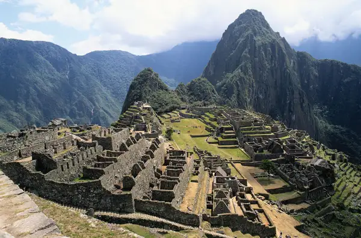

Machu Picchu
Machu Picchu is a 15th-century Inca citadel located in the Eastern Cordillera of southern Peru on a 2,430-meter mountain ridge.
This Incan site near Cuzco, Peru, was "discovered" in 1911 by Hiram Binham, who believed it was Vilcabamba, a secret Incan stronghold used during the 16th-century rebellion against Spanish rule. Although that claim was later disproved, the purpose of Macu Picchu has confounded scholars.
